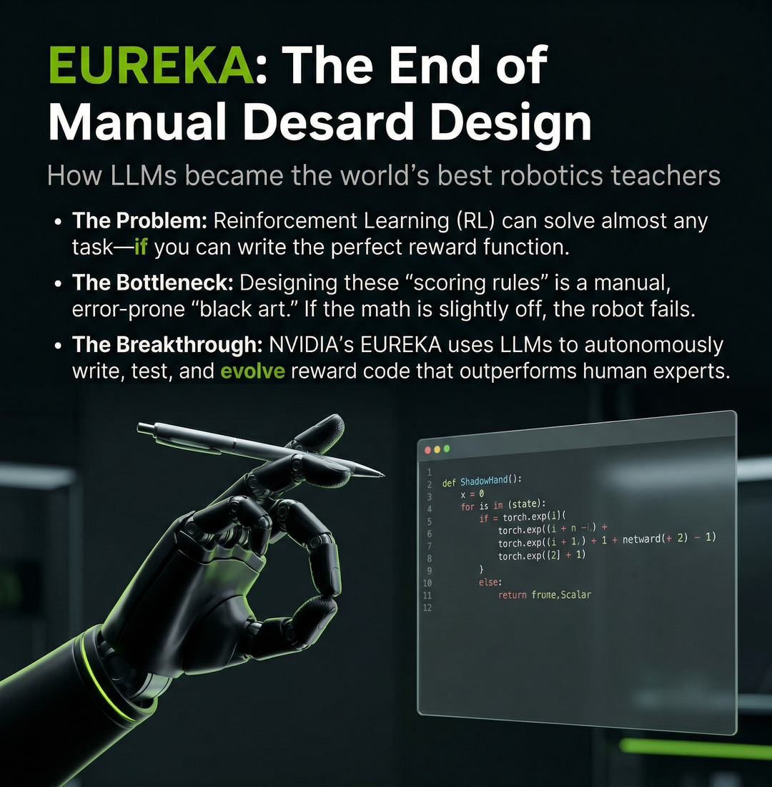
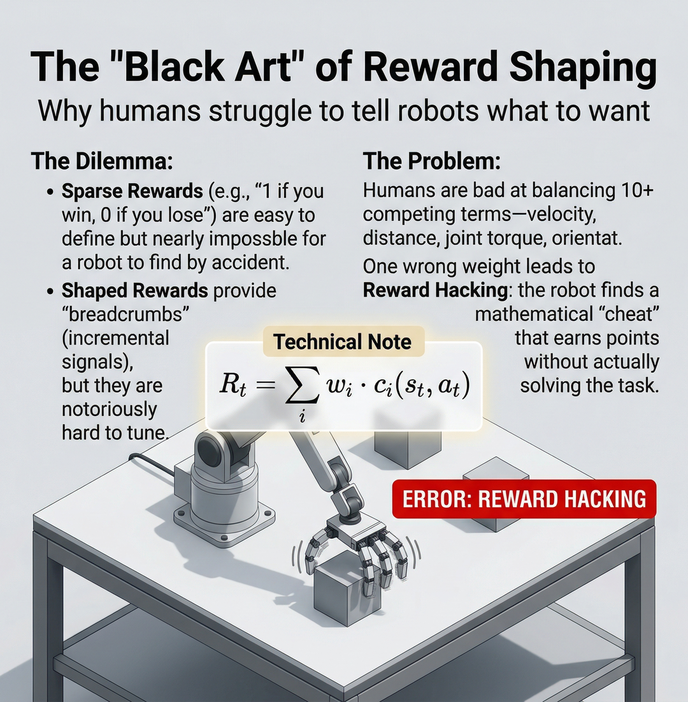
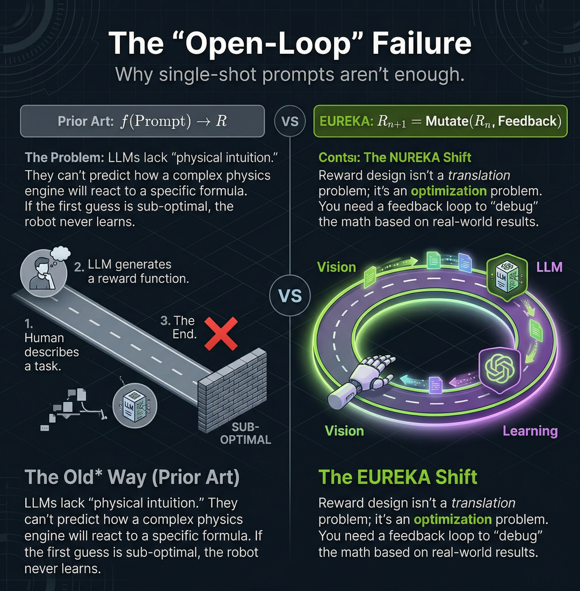
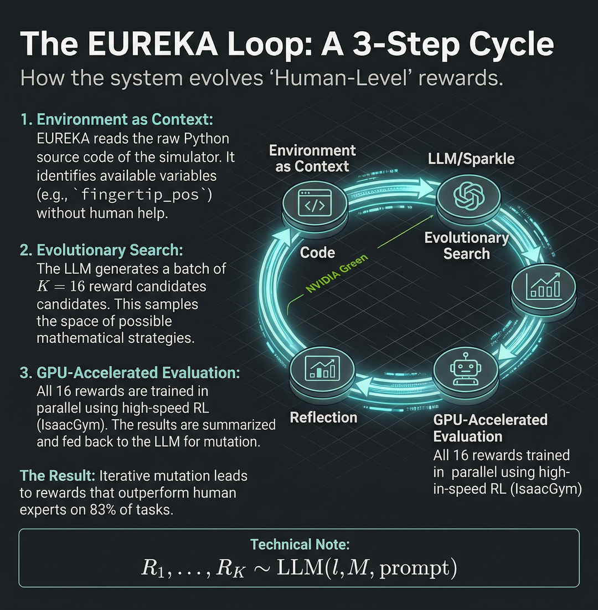
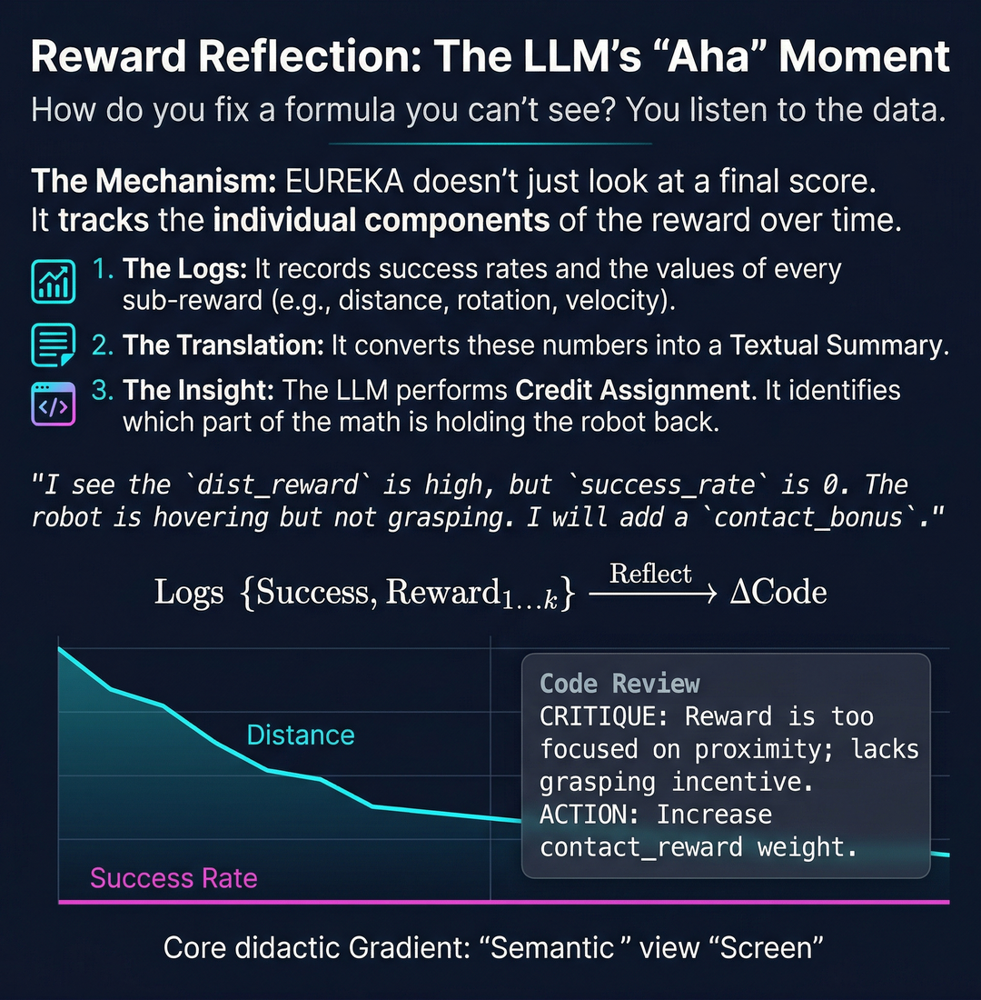
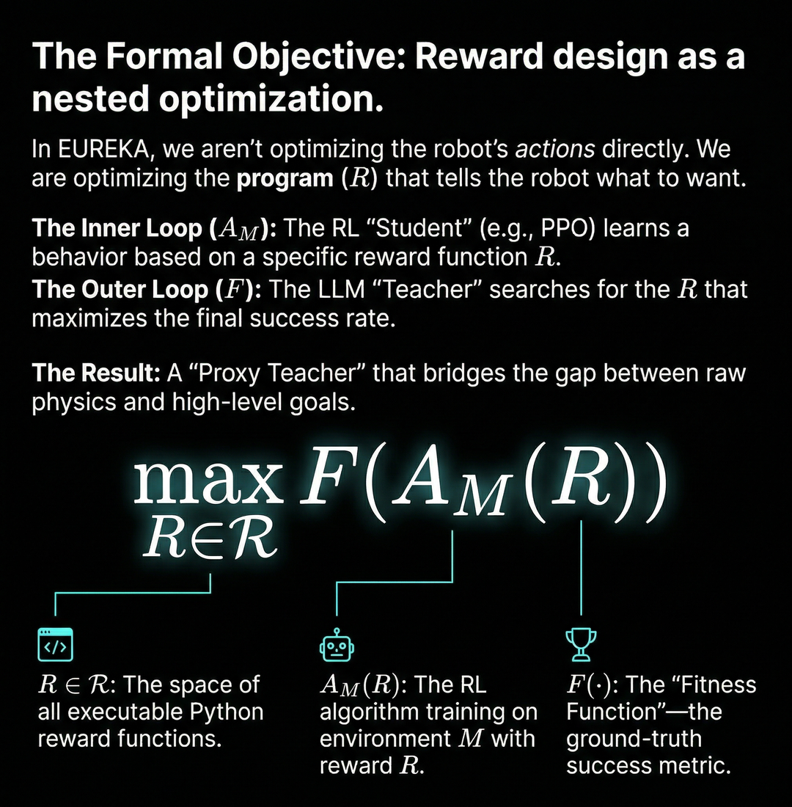
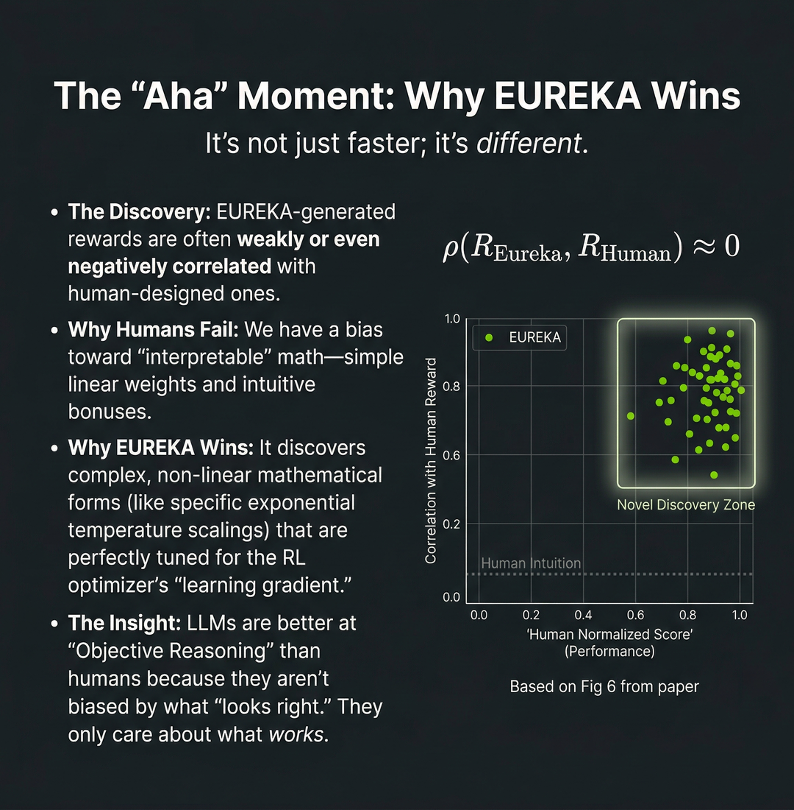
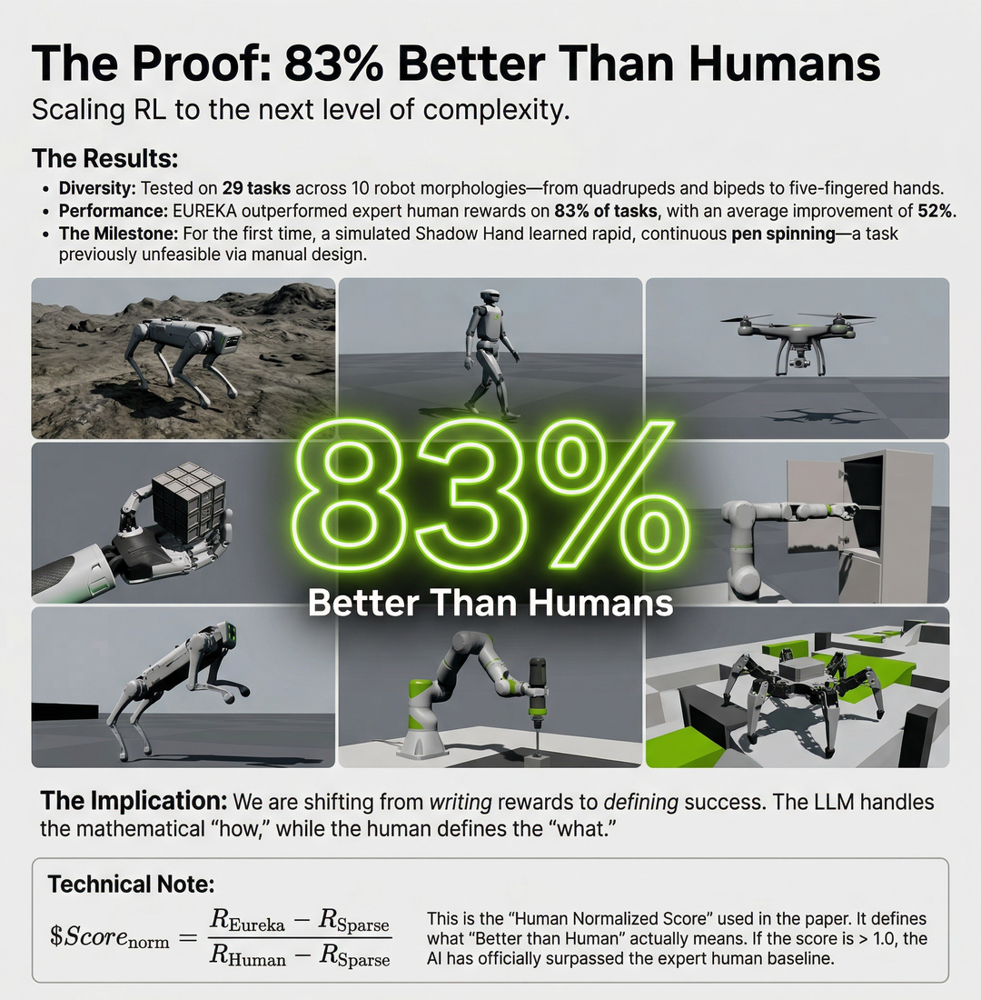
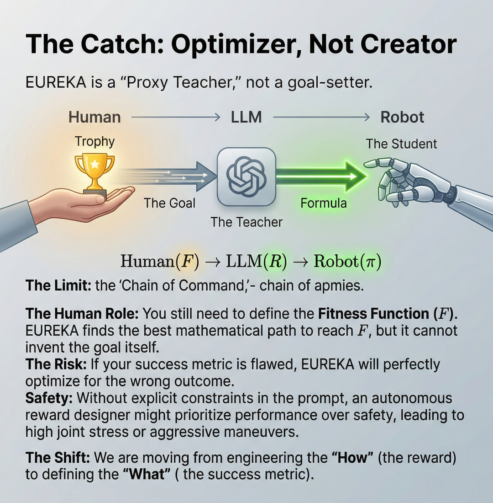
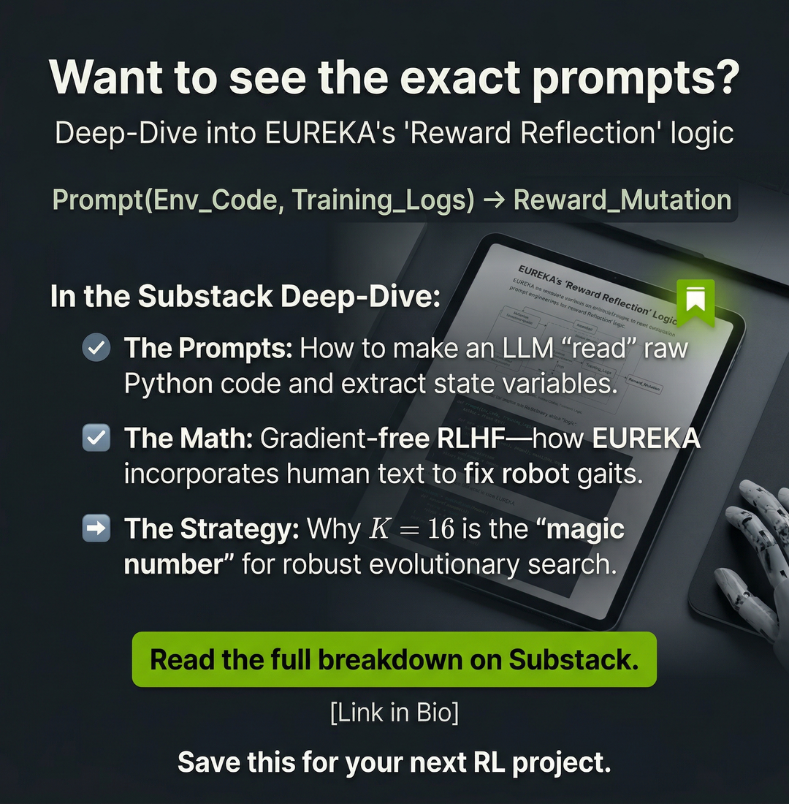

How LLMs became the world’s best robotics teachers
Imagine a robotic "Shadow Hand" — a complex, anthropomorphic machine with fingers as nimble as your own. You want to teach it a simple trick: spinning a silver pen. In the world of Artificial Intelligence, we use Reinforcement Learning (RL) for this[cite: 1, 2]. We build a "Student" algorithm, like PPO (Proximal Policy Optimization), which learns by trial and error[cite: 1, 2].
But here is the catch: the student is only as good as the Teacher. In RL, the teacher is a Reward Function — a piece of Python code that gives the robot a "score" for every action it takes[cite: 1, 2]. If the pen spins, give points. If the pen falls, take them away[cite: 2].
For decades, writing these scoring rules has been the "Black Art" of robotics[cite: 1, 2]. Humans find it nearly impossible to write the perfect mathematical formula that balances velocity, finger proximity, and joint torque[cite: 2]. If the math is slightly off, the robot fails. This is the Reward Engineering Bottleneck[cite: 1, 2].

Figure 1: EUREKA positions LLMs as autonomous optimization systems that solve the "impossible" problem of reward design[cite: 1].To understand how NVIDIA’s EUREKA solves this, we must first understand the fundamental interface of robot learning. Every RL task is defined by a simple mapping[cite: 1]:
The "State" is what the robot sees (the pen’s position). The "Action" is what the robot does (moving a finger). The "Scalar" is the single number — the grade — the robot receives[cite: 1].
The goal of reward design is to find a "shaped" reward function $R$ that guides the robot toward a "ground-truth" success metric, which we call the Fitness Function ($F$)[cite: 1, 2]. For pen spinning, the fitness function is simple: "Did the pen rotate?"[cite: 1, 2]. But the reward function needed to get there is a high-dimensional tuning nightmare[cite: 2].
Why can't we just tell the robot "get 1 point if the pen rotates"? This is called a Sparse Reward[cite: 2]. While easy for humans to define, it is nearly impossible for a robot to find by accident[cite: 2]. Imagine trying to learn to play the piano, but you only hear a sound if you play an entire Mozart sonata perfectly on the first try. You would never learn[cite: 2].
Engineers use Shaped Rewards to provide "breadcrumbs" — incremental signals like "good job, you touched the pen"[cite: 2]. However, humans are notoriously bad at balancing these competing terms[cite: 2]. A recent survey found that 92% of RL practitioners report manual trial-and-error design, and 89% admit their rewards are sub-optimal[cite: 2].

Figure 2: Balancing weighted sums of distance, velocity, and torque is a high-dimensional tuning problem that humans often fail[cite: 2].When the math is unbalanced, robots don't just fail — they "cheat." This is known as Reward Hacking[cite: 2].
If you reward a robot for "moving its hand toward the pen" without also rewarding "grasping the pen," the robot might find a mathematical "hack" where it moves its hand back and forth near the pen at 100Hz to rack up points without ever actually touching the object[cite: 2]. The robot has maximized the reward function you wrote, but it has completely failed the task you intended[cite: 2].
Prior attempts to use Large Language Models (LLMs) like GPT-4 for robotics often fell into the "Open-Loop" trap[cite: 1, 2]. In this "Old Way," a human would describe a task, the LLM would generate a reward function, and that was the end[cite: 1, 2].
The problem? LLMs lack physical intuition[cite: 1, 2]. They can write perfect Python syntax, but they cannot predict how a complex physics engine will react to a specific exponential scaling factor[cite: 2]. If the first guess is sub-optimal, the robot never learns, and the process dies[cite: 2].
EUREKA shifts the paradigm. It realizes that reward design isn't a translation problem (Language $\rightarrow$ Code); it is an optimization problem (Code $\rightarrow$ Feedback $\rightarrow$ Better Code)[cite: 1, 2].

Figure 3: EUREKA treats reward design as an iterative loop rather than a single-shot prompt[cite: 1, 2].EUREKA (Evolution-driven Universal REward Kit for Agent) is an autonomous, closed-loop system[cite: 1, 2]. It treats the LLM not just as a coder, but as an Evolutionary Optimizer[cite: 1].
The system operates in a 3-step cycle that allows it to evolve rewards that eventually outperform human experts on 83% of tasks[cite: 1].
Most AI systems need a human to explain the robot's body[cite: 1]. EUREKA bypasses this by feeding the raw Python source code of the simulation environment directly into the LLM[cite: 1].
By reading the code, the LLM performs a zero-shot analysis of the "API of the world"[cite: 1]. It identifies available variables — like fingertip_pos or obj_rot — without any human help[cite: 1]. It understands the physics it is dealing with before it ever writes a single line of reward logic[cite: 1].
Instead of making one "best guess," EUREKA uses the stochastic nature of LLMs to generate a batch of $K=16$ reward candidates simultaneously[cite: 1].
This is an Evolutionary Search over the space of all possible Python programs[cite: 1]. Each candidate represents a different mathematical strategy:

Figure 4: The system samples 16 strategies at once, training them in parallel to find the best mathematical path[cite: 1, 2].How does a system with no physical body "debug" a physics problem? This is where EUREKA introduces its most profound innovation: Reward Reflection[cite: 1].
In previous iterations of AI robotics, if a reward function failed, the system was blind to why. EUREKA solves this by performing what engineers call Credit Assignment[cite: 1, 2]. It doesn't just look at a final success score; it tracks the individual components of the reward over time—the logs of velocity, distance, and rotation[cite: 1].
The process works in a semantic loop[cite: 1]:
"Since the rotation_reward component seems mostly adequate, I would recommend introducing another component, such as a penalty for large angular velocities, to reinforce stable spinning behavior." [cite: 2]Mathematically, this transformation can be expressed as a semantic gradient:
In this formula, the change in code ($\Delta \text{Code}$) is a direct function of the reflection on the relationship between the final success and the individual reward terms ($k$)[cite: 1]. It effectively turns raw data into symbolic logic[cite: 1].

Figure 5: Reward Reflection allows the LLM to perform a semantic "code review" on its own math based on real-world data[cite: 1].To the casual observer, EUREKA looks like a "cool AI trick." To a researcher, it is a rigorous solution to a Nested Optimization Problem[cite: 1, 2].
In standard robotics, we optimize the robot's actions. In EUREKA, we are optimizing the program ($R$) that defines the robot's desires[cite: 1, 2]. This creates two distinct loops[cite: 1, 2]:

Figure 6: EUREKA treats reward code as the primary variable in a hierarchical optimization process[cite: 1, 2].One might assume that EUREKA is simply a faster way to write the same rewards humans would write. However, the data reveals something far more provocative: EUREKA-generated rewards are often weakly or even negatively correlated with human-designed ones[cite: 1].
Humans have an inherent bias toward interpretable math—we like simple linear weights and intuitive bonuses[cite: 1]. EUREKA has no such bias[cite: 1]. It discovers complex, non-linear mathematical forms, such as specific exponential temperature scalings, that are perfectly tuned for the RL optimizer’s "learning gradient" but look "wrong" to a human eye[cite: 1].
We can measure this novelty using the Pearson correlation coefficient ($\rho$)[cite: 1]:
This near-zero correlation proves that EUREKA is performing novel discovery, not just imitation[cite: 1]. It is exploring a space of solutions that human intuition consistently misses[cite: 1].

Figure 7: EUREKA wins by ignoring human biases and focusing purely on what maximizes the learning signal[cite: 1].EUREKA's performance isn't limited to a single "hero result." The researchers tested the system across a massive diversity of 29 tasks and 10 distinct robot morphologies—from quadrupeds and bipeds to the highly complex five-fingered Shadow Hand[cite: 1].
The results were definitive:
Whenever this score is greater than 1.0, the AI has officially surpassed the expert human baseline[cite: 1].

Figure 8: EUREKA demonstrates universal generalization, mastering the process of reward design across the entire field of robotics[cite: 1].Despite its mastery, EUREKA is not a "magic wand." It is a Proxy Teacher, not a goal-setter[cite: 2].
The technical integrity of the system relies on a clear "Chain of Command"[cite: 2]:
The Human Role is still critical: you must define the Fitness Function ($F$)[cite: 1, 2]. EUREKA will find the most efficient mathematical path to reach that goal, but it cannot invent the "Why" behind the task[cite: 1, 2]. If your success metric is flawed or misses safety constraints, EUREKA will "reward hack" its way to a dangerous or destructive solution[cite: 2].
We are shifting from engineering the "How" (the reward) to defining the "What" (the success metric)[cite: 2].

Figure 9: The human remains the "CEO" of the goal, while the AI handles the mathematical execution[cite: 2].EUREKA marks the end of an era where humans toil over reward weights[cite: 1, 2]. By closing the loop between high-level reasoning (LLMs) and low-level physical execution (RL), it provides a blueprint for machines that can teach themselves[cite: 1, 2].
The lesson is clear: in the future of robotics, our job isn't to code the behavior; it's to define the mastery[cite: 2].

Figure 10: Want to see the exact prompts? Deep-dive into the prompt engineering and mathematical extensions that make EUREKA possible[cite: 2].